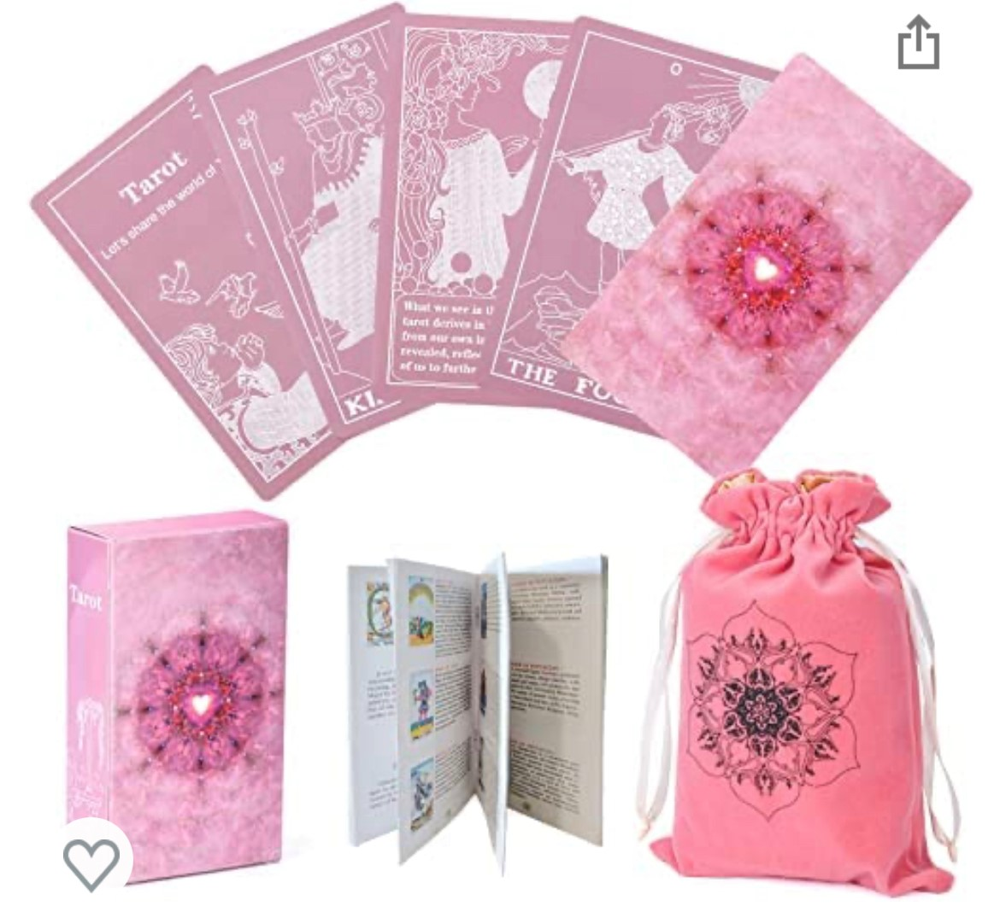
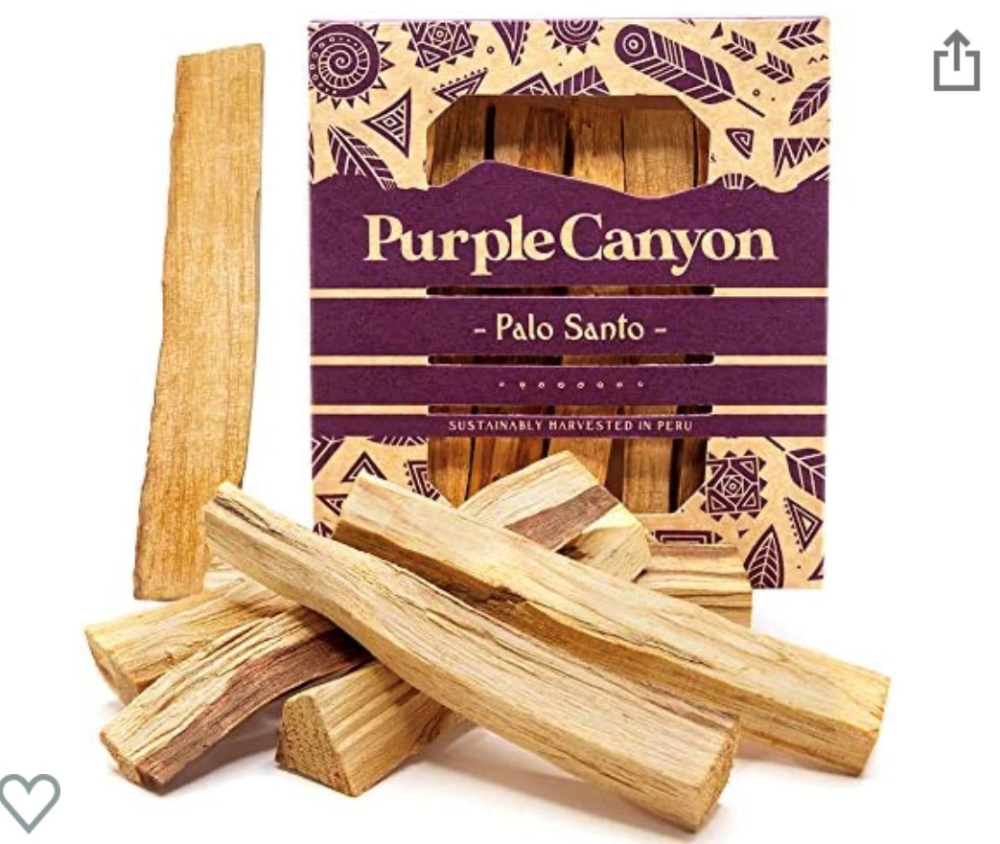
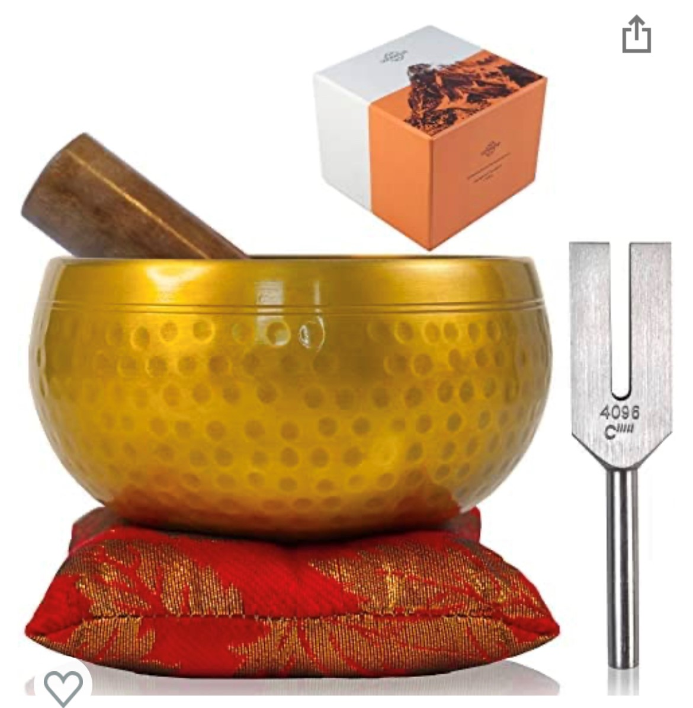

-

This is a perfect started for begginers in tarot. Its cute, its
pink, its classic drawing tarot style.
-

To clean your energy and to relax. In many countries Polo Santo is
used for protection in many countries. An amazing bonus to it, wonderful smell.
-

Tibetan Singing Bowl Set and Tuning fork perfect for meditation and
putting yourself in good mood.